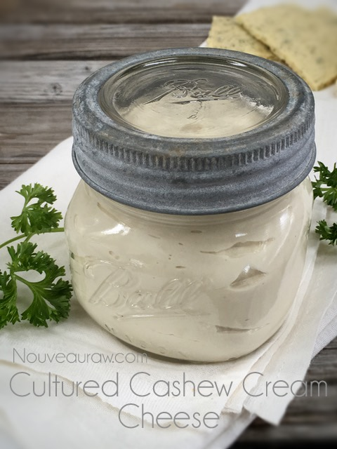
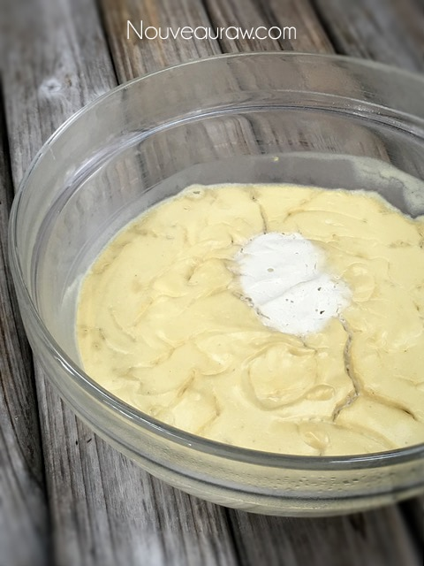
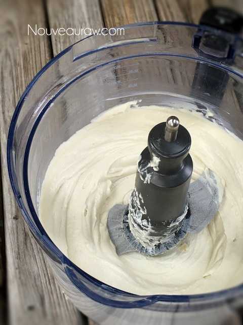
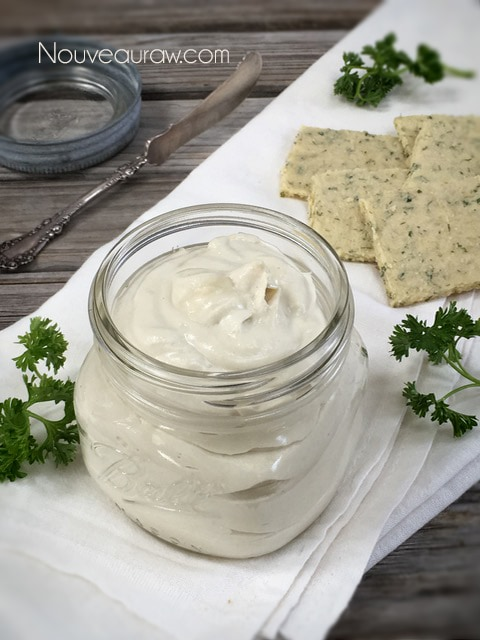
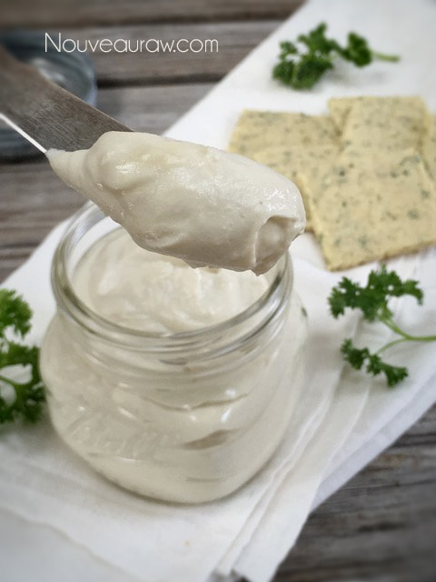
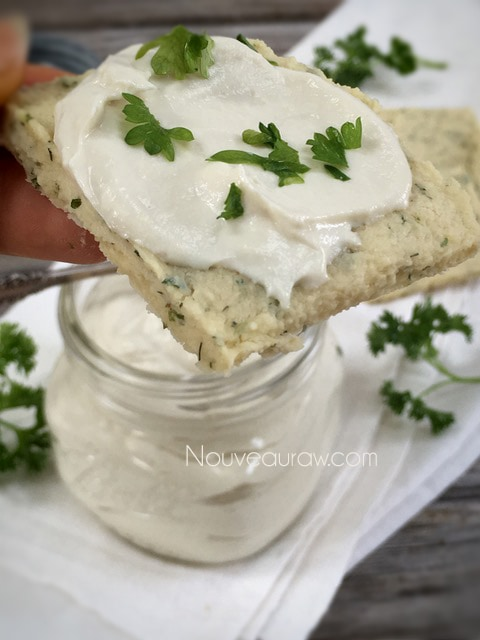

Cultured Cashew Cream Cheese Spread

This raw, vegan, cultured cream cheese is produced without antibiotics, synthetic hormones, or pesticides. And best of all, it is cultured. Not only does it taste great, but it is creamy, with a soft texture for amazing spreadability.
When it comes to replicating dairy products, there are a couple of requirements that must be met: flavor and texture. Without paying attention to those two criteria, it will be a hard sell. Our end goal is to provide health-boosting foods that leave us feeling good about what crosses our palate and fills our bellies.
Health Insurance Plan
Getting people to enjoy healthy foods is like drawing up a health insurance plan for them. The initial cost of the plan is getting them to let go of expectations. The plan may seem a bit extravagant in the beginning, but we need to understand that this is a lifetime investment–one that gives us peace of mind, knowing that we are doing our best to enhance the future for ourselves and for those we love.
My Plan
I am not here to sell health insurance. Well…in a roundabout way, it appears I am. My plan is to share recipes that not only taste amazing, and look amazing, but are healthy for you, as much as possible. Does that sound like a good insurance plan to you?
My Approach to Vegan Cream Cheese
First, let’s talk about texture. If you create a cream cheese that is chunky or grainy, it will be difficult to expect anyone to come back for seconds. There are three things that go into creating silky-smooth texture.
- You need a high-powered blender. Just like those who demand to own the best tools that are housed in the garage, we too need the best tools in the kitchen. My recommendation is either a Vitamix or Blendtec.
- Cashews lend a super creamy base when soaked and blended. Alternatively, soaked, skinned almonds could work, but cashews are the best.
- Flax gel is something that I have been tinkering with for more than a couple of years now. It is optional in this case, but I do believe that it helped create this amazing recipe, and it also provides great health benefits. I provided a link down below on how to make it.
- Coconut butter helps to stiffen the cheese when it chills in the fridge. Blended cashews on their own will thicken as they chill, but as I said before, my goal was to create more of a dairy cream cheese texture. Through all these ingredients and techniques, I was able to achieve that.
 Ingredients:
Ingredients:
Preparation:
Soaking the cashews
- Place the cashews in a glass bowl, along with 4 cups of water.
- Soak for at least 2 hours. Read more about why (here).
- The soaking process will help reduce phytic acid, which will aid in digestion.
- The soaking also softens the cashews, so they blend nice and creamy.
- After the cashews are through soaking, drain and rinse.
Blending the cheese base
- Drain the soaked cashews and discard the soak water. Place in a high-speed blender.
- In a high-powered blender, combine the cashews, water, bell pepper, onion, chives, and flax gel.
- To get the creamy texture we want, it is important to use a high-powered blender. It could be too taxing on a lower-end model.
- Blend until the filling is creamy smooth. You shouldn’t detect any grit. If you do, keep blending.
- This process can take 2-4 minutes, depending on the strength of the blender. Keep your hand cupped around the base of the blender carafe to feel for warmth. If the cream cheese is getting too warm, stop the machine and let it cool. Then proceed once cooled.
- Add the probiotics and blend just until incorporated. Please make sure that it doesn’t get too warm, which will kill the probiotic bacteria.
- I provided a link above that will take you to my Amazon store. I have several probiotics listed there that I use for recipes like these. They come in capsules, and I empty them out into a measuring spoon.
Fermentation process
- First and foremost, make sure all the utensils and pieces of equipment you use for culturing are sterilized to avoid growing bad bacteria.
- If at any time mold–fuzzy, black, or pink forms–your cheese will need to be tossed.
- Place the cheese mixture into a medium-sized glass bowl, cover with cheesecloth (or breathable cloth), and allow the mixture to ferment (culture) at 115 degrees (F) in the dehydrator for 12 hours.
- I found that my 9 tray Excalibur worked perfectly for this process, since it has a large cavity that will hold bowls.
- If you don’t own a dehydrator that will accomodate a bowl, you can use your oven. Do not turn the heat on. Place the bowl in the center of the oven, shut the door, and turn on the oven light. The light bulb alone will produce some heat. Mine reaches 100 degrees (F), so please test yours. At a lower temperature, the fermenting process will take a bit longer.
- Keep in mind there is no hard and fast rule about how long the cheese needs to culture. Your tastebuds will have to guide you in determining the right length of time.
The end blend:
- Transfer the cheese base to the food processor and add the coconut butter, maple syrup, and salt.
- Process until well incorporated, making sure to stop now and then to scrape down the edges of the bowl.
- Place in an airtight glass container and chill overnight to help create a firmer, spreadable texture.
- This should keep for several weeks. Use all senses to determine freshess.

In the photo above, do you see a white spot in the center? My cheesecloth
was resting there during the culturing process. No biggie.

Blend until smooth and creamy.



© AmieSue.com